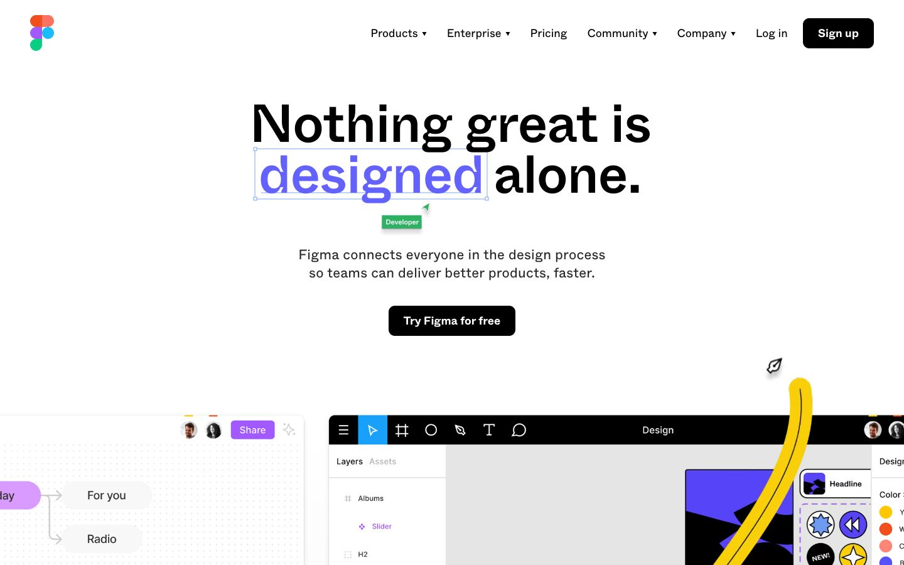

References / Website / 30
Figma marketing website, c. 2022
Figma’s early-2020s marketing pages, named with Gumroad as a source of the style.
- Source
- Figma (archived copy)
- Creator
- Figma
- Made
- c. 2021–2022
- Style
- Neo-brutalism (influence; agent-proposed, not yet reviewed by a person)
- Moods
- Playful, loud
- Evidence
- Wayback Machine capture of figma.com from 28 February 2022, captured with
tools/capture.mjs(headless Chrome, 1440 × 900) and inspected on 25 September 2026. - Reviewed
- Rights
- Third-party work, stored with credit for commentary. License: unverified. Rights policy
Context
Michał Malewicz, “Neubrutalism is taking over the web” (Hype4 Academy, first published 28 March 2022) analyzes Figma landing-page sections: cards “purposefully inconsistent”, shapes like “template shapes from PowerPoint”, hard figure-to-background contrast, and thick, slightly quirky fonts.
NN/g, “Neobrutalism: Definition and Best Practices” (Hayat Sheikh, 11 April 2025) names “Figma's brand refresh” as an example, linking to Figma’s October 2019 brand post by Tori Hinn. That post predates the name and does not use it.
Observed
- White page with a centered black headline, “Nothing great is designed alone.”, in a large sans-serif. The word “designed” is violet inside a thin selection box with a cursor label.
- Buttons are black with white text and rounded corners. No component has a thick outline or a hard shadow.
- Below the hero, a mock Figma editor shows the product interface with small colorful stickers and a hand-drawn yellow stroke.
Why it belongs
The capture does not show the outline-and-hard-shadow grammar. It fails the fingerprint on outline width, radius, and shadows. Figma’s influence on the style, as Malewicz describes it, is in its playful stickers, bright accents, and hand-made marks, not in its layout components. The placement stays, but as an influence.
Measured
Machine-extracted by tools/extract-traits.js on . Full measurement.
- Type families
- Whyte (100%)
- Type scale ratio
- 1.11
- Median radius
- 10 px
- Mean chroma
- 0
- Palette
- #ffffff 85%
- #282828 12%
- #000000 2%
- #ffc700 0%
- #0fa958 0%
- #5551ff 0%
- #909090 0%
- #a259ff 0%
What to review next
- Check other Figma pages from 2021–2022, such as the Config and community pages, for stronger examples.

